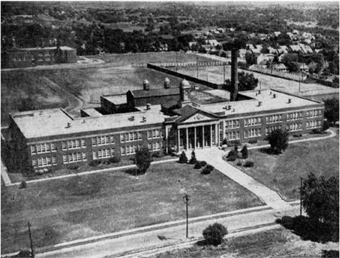
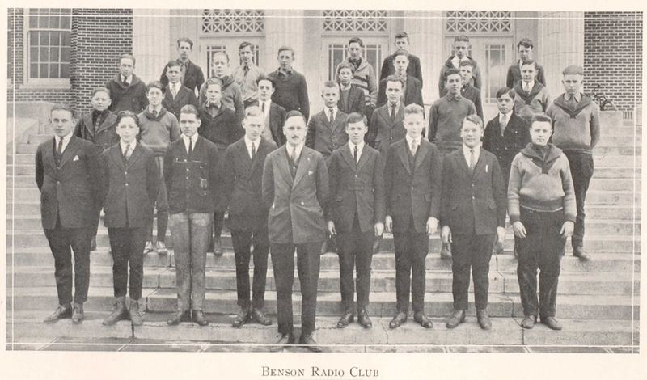
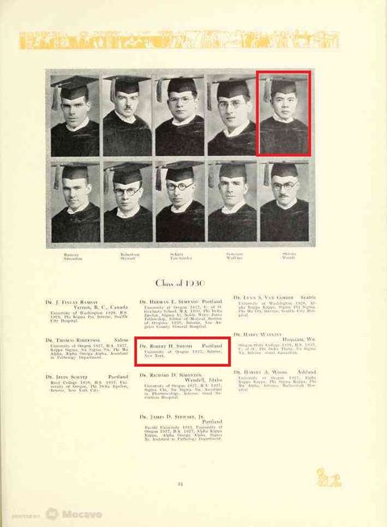

アメリカ日系一世 ロバート汐見の足跡（3）
ロバート汐見の青春
1920年にフェイリング・エレメンタリースクールを卒業し、ロバート汐見はベンソン・ハイスクール(写真1)に進学した。地元密着紙OREGONIAN*に何回か名前が掲載されている。

＜ラジオクラブ＞ 1922年3月19日付
12人の新メンバーが前回3月7日のミーティングで選ばれた。フロイド・ロビンソン、グレン・フーバー、（中略）ロバート汐見とジョセフ・ミラー。ミーティングではクラブの年長のメンバーによる無線電信の連続講義と質問コーナーが始まっている。リチャード・セトラストロムとウィラード・バージーは受信機を作成し現在設定中だ。この受信機は完成後クラブ室に設置される。
Shows afford Amusements for pupils of citi high schools (The Sunday Oregonian 19,Mar. 1922)
右から4列目、下から第2パラグラフが当該記事。
＜カメラクラブ＞ 1922年11月19日付
ベンソン・テック・カメラ・クラブは毎週金曜日の放課後に定例会を開いている。11月10日にはクラブに相応しいピンバッジ式エンブレムの選定を行った。採用されたデザインはコダックの折り畳みカメラのミニチュアの意匠で、クラブの頭文字T.C.C．が刻まれている。ホールデン・リロイは様々な写真誌を調査し次回のミーティングで報告する事になった。新しい暗室の予定表も完成し、運用され始めた。メンバーはこの週次予定表に従って自分やクラブの写真を現像し、技術を磨く。今回の定例会の多くの時間は、準備中の写真コンテストの打ち合わせに割かれた。ロバート汐見は掃除係を任されて暗室を片付けに行った。
Multitude of affairs keep pupils of high schools busy (The Sunday Oregonian 19, Nov. 1922)
右から2列目最下段パラグラフが当該記事。
ラジオクラブとカメラクラブ。ロバートは中々新しい物好きだったようである。
ラジオクラブの集合写真でもアジア人はただ一人。それにも臆せず古き良き時代のアメリカで高校生活を楽しんでいたロバートの姿が浮かぶ。（写真2）

高校卒業後、ロバートはオレゴン医学部大学に進学した。父の佐市はこの頃日本に帰国したらしく、ロバートの次女キャロルによると、ロバートは住み込みの下男(houseboy)をして学費を稼いだと言う。1930年のオレゴン大学年鑑の復刻版を取り寄せたところ、アールデコの装丁の立派なハードカバーで、多彩なクラブ活動や様々なアクティビティで青春を謳歌する大学生達が溢れているが、ロバートにはその様な余裕はなかったことだろう。博士帽を被ったロバートの卒業写真のキャプションには、卒業後の進路はニューヨークでのインターンとある。（写真3)

オレゴン大学紀要(The University of OREGON Bulettin)によると、ロバートはCollege of Literature, Science and the ArtsとSchool of Medicine, Doctor of MedicineのBAを取得している。青春代に培った文学・科学・芸術の素養が、後に美術館やオーケストラ、オペラへの支援活動に繋がったのだろうか。
＊The Sunday Oregonian原文
<Radio club 19220319>
Twelve new members were voted into the Radio club at the last meeting on March 7. They are: Floyd Robinson, Grenn Hoover, Darwin Marvin, Leslie Brennan, W. C. Stuart, Percy Yost, Ralph Peterson, Clyde Blomgren, Richard Oswad, Ed Bell, Robert Shiomi and Joseph Miller.
Their older members of the club have started a series of lectures on the theory of wireless telegraphy at the meetings. A question box has also been started. Rechard Settlerstrom and Willard Barzee are now constructing and setting up a receiving set. This set will be installed in the club room when it is completed. The club constitution is being revised by Murice Saelens, William Burke and John Smith.
<The Benson Tech Camera club 19221119>
The Benson Tech Camera club held their regular meeting after school on Friday, November 10 at which time they proceeded to select a suitable emblem in the way of a pin which would represent the club in the most satisfactory manner.
It was decided that the best design was that of an open miniature folding camera of kodak, upon which was emblazoned the letters T.C.C. Holden LeRoy was appointed to investigate merits of various photography magazines and make a report on the same at the next meeting.
The new dark room schedule has just been completed and is now being enforced. By this schedule each member is allotted a certain amount of time to use the dark room each week for he purpose of developing or printing his own or the club’s pictures.
A good portion of the meeting period was devoted to the talking over of the photography contest now in progress among the club members.
Robert Shiomi was appointed clean and straighten up the dark room